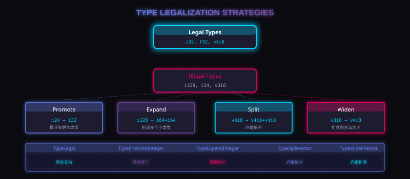

6. 类型合法化：Type Legalization
LLVM IR 能表达很多类型，但目标机器不一定支持。
类型合法化的目标是：
核心目标
把目标不支持的类型降级成目标支持的类型。
例如：
- 目标支持
i32，但不支持i24； - 目标支持
i64，但不支持i128； - 目标支持
v4i8，但不支持v3i8。
目标后端通过 addRegisterClass(MVT) 告诉 SelectionDAG：哪些 MVT 对当前目标是合法的。
之后 SelectionDAG 会为各种类型建立一张 action 表，用不同策略处理非法类型。
常见策略包括：
| Action | 含义 |
|---|---|
TypeLegal |
目标原生支持这个类型 |
TypePromoteInteger |
把整数提升成更大的整数 |
TypeExpandInteger |
把整数拆成两个更小的整数 |
TypeSoftenFloat |
把浮点转换成同大小整数处理 |
TypePromoteFloat |
把浮点提升成更大的浮点 |
TypeScalarizeVector |
把单元素向量标量化 |
TypeSplitVector |
把向量拆成两半 |
TypeWidenVector |
把向量扩宽成更大的合法向量 |

配图：类型合法化策略图
举几个例子。
6.1 i128 加法拆成两个 i64
如果目标不支持 i128，但支持 i64，那么：
i128 add | low 64-bit add high 64-bit add with carry
SelectionDAG 不只是"改类型"，它会真的生成新的 DAG 节点。
6.2 i24 提升到 i32
如果目标不支持 i24，但支持 i32，可以把 i24 操作提升成 i32 操作。
但提升后要注意高位不能污染结果，所以 SelectionDAG 会通过 mask 等操作保留低 24 位。
6.3 v3i8 扩宽成 v4i8
某些目标更愿意用更宽的向量类型。例如 Hexagon 可以把 v3i8 扩宽成 v4i8，然后在合法向量类型上执行操作。
目标后端可以重写：
LegalizeTypeAction getPreferredVectorAction(MVT);
来告诉 SelectionDAG 某个向量类型更适合怎么合法化。